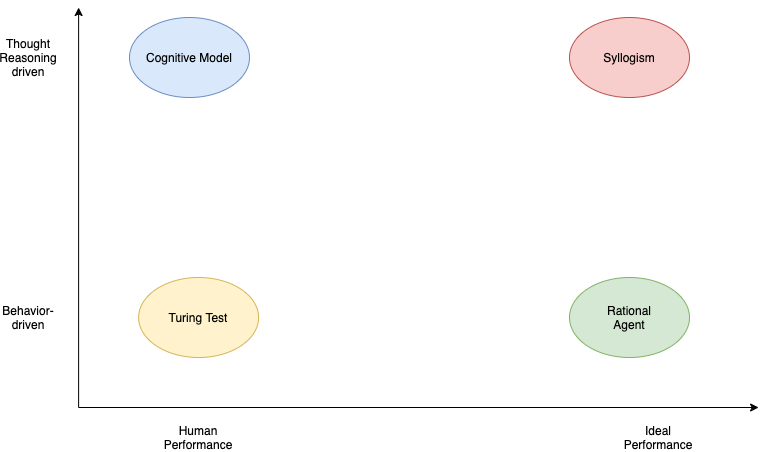
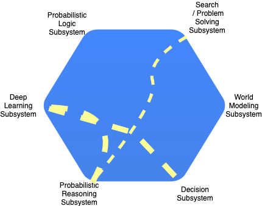

The four approaches towards AI
Contents
The four approaches towards AI#

The Turing Test Approach#
A 5-min behavioral intelligence test, where an interrogator chats with the player and at the end it guesses if the conversation is with a human or with a programmed machine. A Turing contest (Loebner Prize) is is held annually since 1991.
This course’s projects includes the Alexa prize which is not a turing test. The Alexa Prize creates social bots that engage in interesting, human-like conversations, not to make them indistinguishable from a human when compared side-by-side. Social bots may have ready access to much more information than a human.
Summary of the Turing Test
The Alexa Prize is not a Turing Test
What capabilities we need to have to pass a turing test.
Natural Language Processing
Knowledge Representation
Automated Reasoning
Machine Learning
Computer Vision
Robotics
The last two capabilities are not needed for the verbal oriented Turing test but they are needed for what is called the total Turing test. According to this test, the player and the interrogator can communicate physically. For example, there is a hatch where the interrogator can pass objects to the player through. Obviously the player must have perception abilities to understand what object it is (5) and possibly a body that can manipulate the object (6). Embodied AI research is one of the hotter areas of AI today as we will see in the AI Agents section.
The Cognitive Model approach#
Newell, in his book “Unified Theories of Cognition”, defines cognition as:
Memory, learning, skill
Perception, motor behavior
Problem solving, decision making, routine action
Language
Motivation, emotion
Imagining, dreaming
How do we differentiate a cognitive model from a conceptual or statistical model? “Cognitive science is concerned with understanding the processes that the brain uses to accomplish complex tasks including perceiving, learning, remembering, thinking, predicting, problem solving, decision making, planning, and moving around the environment. The goal of a cognitive model is to scientifically explain one or more of these basic cognitive processes, or explain how these processes interact.”, –Busemeyer & Diederich (2010)
These theories of cognitive processes are tested via various cognitive architectures. Its important to realize that much of todays’ debate about the path ahead in AI maps to the few different architectures. The hybrid architecture (symbolic and connection-oriented) is what is being investigated today by many research institutions.
The Syllogism-based approach#
The translation from Greek of the word syllogism is to support logic.
This approach emphasizes how we think the right way and encodes the pattern of logical arguments that can reach correct conclusions from a set of propositions (premises). Problem solving where the problem statement is expressed in a logic notation, matured in the 60s. As we have seen in the course introduction section such rule-based systems are still with us and for small and deterministic state spaces can provide a very compact and elegant way to inference.
Logic-based reasoning is coming back to fashion. One of the most promising areas is their application to interpretability (also known as explainability ) of deep learning based methods for e.g. classification in medical diagnosis. Probabilistic Logic Networks (PLN) are extensions of this approach to address problems with uncertainty.
The Rational Agent approach#
A rational agent acts to achieve the best outcome. The rational approach encompasses the syllogism and Turing-test approaches. We still need provably correct inference and the formal representations of logic as well as the ability to perceive, communicate, and learn to achieve a good outcome. But we need to generalize these approaches to include “good-enough” inference and adaptation to the changing environment contexts that the agent is facing without giving up on the mathematical formality that utility theory allows us to design such agents.
The agent facing a fire is an instructive example. There maybe no time for optimal reasoning to a conclusion (e.g. run) but a simple reflexive plan can offer the best outcome.
AI as a distributed system approach#
As its evident from all existing approaches, AI is a multidisciplinary science that aims to create agents that can think and act humanly or rationally. This course starts the new decade filled with the promises of the previous one - AI is not only around the corner and it can take several decades of R&D effort for it to match human intelligence. Our purpose here is to (a) understand and appreciate the significant progress that certain components of AI have made over the last few years and (b) to be able to synthesize such components into AI systems that can at least solve domain-specific problems. In other words we are not trying to solve the most difficult and general AI problem as we don’t know its solution. We also can’t wait as we would like to participate in the GAI developments to begin with.
A substantial part of AI is machine learning (ML) and that component alone is worth of at least a couple semesters. ML nowadays is used to process the visual sensing (computer vision), verbal commands (speech to text) and many other front-end functions using structures known as Deep Neural Networks (DNNs). These functions are usually effective in modeling the reflexive part of human brain. Their performance sometimes hides the enormous efforts by R&D teams to create carefully curated datasets for the task at hand. When supervised datasets are not enough for the design of reflexive agents policies, we need additional tools such as Deep Reinforcement Learning that offer the possibility to learn agent control policies from world models (or even without them) that in many instances means spending considerable time simulating the environment.
AI is a system with the ability to represent the world and abstract concepts at multiple levels. If we are to draw the architecture of such system, it will have the ability to quickly change depending on the domain and task at hand. Just like origami, AI systems will morph into a suitable architecture, facilitated by high speed interconnections between its subsystems. The controller that controls such changes must be topology aware i.e. knowing the functional decomposition of the AI system and what support for representations and abstractions each subsystem can offer. How these can be combined and ultimately used, is something that needs to be learned. To generalize, such morphic control agents must be able to perform across task domains.
 AI distributed system comprising a number of high-speed interconnected subsystems that are loosely coupled and communicate via a universal language. Line thickness indicates stronger coupling / dependencies between subsystems for the task at hand at this moment in time.
In a limited demonstration of such ability, closed worlds such as games, we have agents that can process thousands of pixels and can create abstractions at the symbolic level. Are they able to generalize ? Doubtful. Which brings us to the very interesting thought. For the vast majority of mission critical industries, we may reach in this decade a good enough performance level. The internet didn’t have 1 Gbps at each household even 5 years ago. But the moment we crossed the 1 Mbps level per user, at the hands of innovators, it managed to change the world as we know it despite its many initial performance issues. The internet does not kill, many people will argue but if anyone believes this analogy, todays’ AI architecture, a bunch of service-oriented silos (APIs) offered by major technology firms, resembles the disconnected/siloed PC before the invention of HTTP and the internet era of the 90s. The protocol and controls that will allow such AI systems to communicate and by doing so demonstrate an ability to synthesize a non-trivial version of intelligence is one of the missing links.